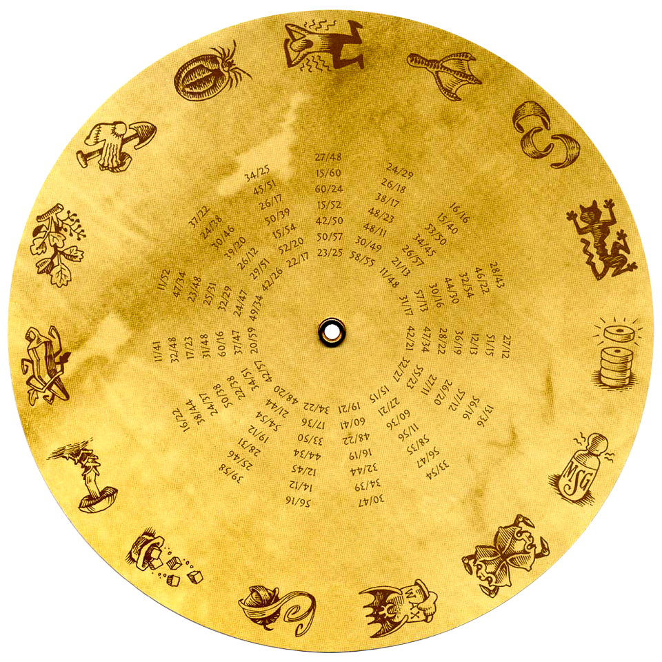
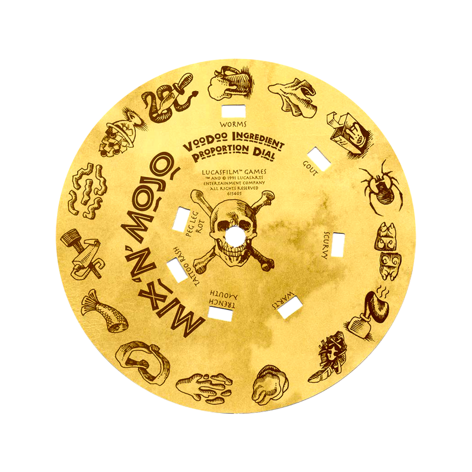

1991 年的 DOS 遊戲用一種很「實體」的方式防拷貝：正版盒裝裡附一個雙層可旋轉紙轉盤。開場劇情演完，
遊戲丟給你兩個巫毒配料圖案跟一道「配方」，你得轉動轉盤讓兩個圖案對齊，才能從配方視窗讀到要輸入的密碼。
盜拷磁片的人沒這張盤，就永遠卡在開頭——手冊裡那隻猴子還特地問你「你過不了關而鬱卒嗎？」在調侃這件事。
下面是真正的雙層轉盤：底盤與上盤都是實體轉盤的原圖，密碼數字直接從上盤的透明視窗透出來——就跟你手上那張紙盤一模一樣。抓著轉盤轉轉看吧。


用滑鼠／手指抓著轉盤直接拖曳，或按左右鈕逐格轉。放開會自動吸附到最近的一格，密碼就會端正地出現在七個配方視窗裡。
配方讀數（目前這一格）
表中數字＝轉盤目前七個視窗透出的密碼，兩者同步。
巫毒配料圖鑑
遊戲的防拷考題是這樣的：畫面給你一道配方（例如「木腿腐爛」），外加兩個配料圖案——
一個要在轉盤下盤外圈找、一個在上盤外圈找。把這兩個圖案轉到對齊，配方視窗就會顯示密碼。
這 15 種配料每個都有兩個名字：下盤一個、上盤一個，全是巫毒教一本正經的「獨門材料」。名稱依公開資料整理，並以遊戲實際中文（如「致命毒蕈」「木腿亮光劑」）校準。
上面那張轉盤的外圈就印著這些圖案：下盤一圈、上盤一圈。轉轉看，把某個圖案轉到最上方的指標，就是在「找配料」。